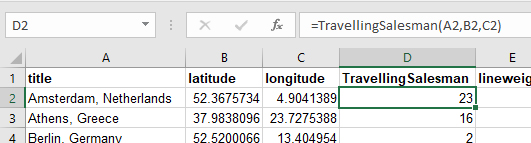
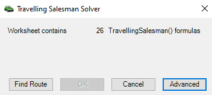
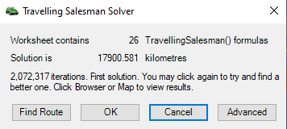

Given a list of places, this solver attempts to find the shortest route to visit them all.
Setup
Each row of the worksheet must have:- A unique place name
- A Latitude
- A Longitude
-
A TravellingSalesman formula that refers to the 3 fields above:

Open a sample TSS workbook to play with.
Solving
Start the TSS solver
and click Find Route. The solver will search for routes using the technique of Simulated Annealing. When it completes, the TSS Formulas' values will be updated and the results are displayed:
OK will sort the worksheet on these formulas, Cancel closes the solver without sorting.
Advanced options
The Advanced button reveals the regression parameters:
- Initial Temperature. Increase this by factors of 10 to select wilder initial values. Try 1'000'000.
- Cooling Rate. The closer this is to 1.000, the slower the search, but better results. Try 0.999999 (and be patient).
- Absolute Temperature. The stopping value, the smaller the value, the longer the final stages of the search. 0.1 for quick searches, 0.000001 for a drawn-out search.
Caveats
This solver works quite well for a moderate number of places (up to a hundred or so). To find reasonable solutions for thousands or more places will take a long time; YMMV